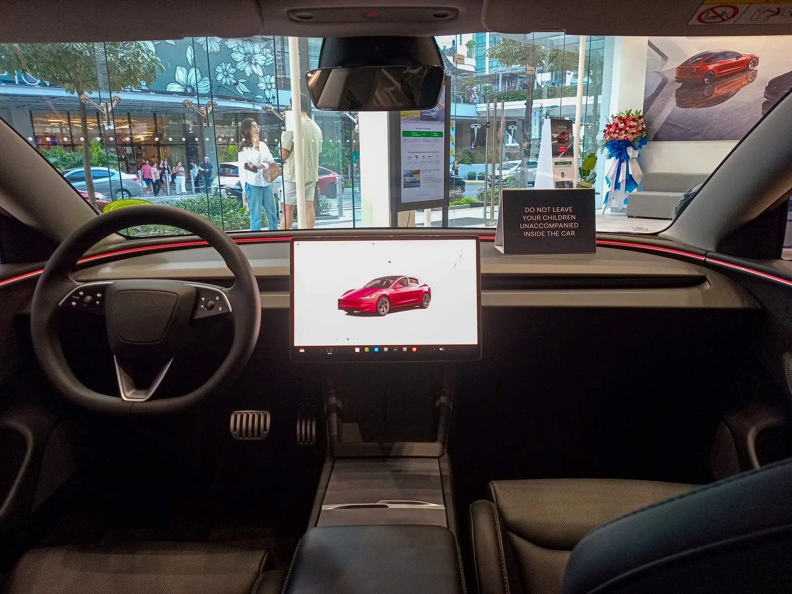

▲ 신형 모델 3 퍼포먼스가 저온 복합 413km 주행거리로 국내 환경 인증을 완료했다
1. "겨울에도 413km 달린다"… 국내 인증 완료
테슬라 신형(2026년형) 모델 3 퍼포먼스가 저온(겨울철) 복합 기준 413km의 1회 충전 주행거리로 국내 환경 인증을 완료했다. 기후에너지환경부 산하 자동차 배출가스 및 소음 인증시스템(KENCIS)에 2026년 9월 3일 등록된 이번 인증 결과에 따르면, 신형 모델 3 퍼포먼스는 저온 복합 413km(도심 389km·고속도로 443km), 상온 복합 477km(도심 498km·고속도로 451km)를 기록했다.
전기차의 겨울철 주행거리는 히터 가동과 배터리 저온 특성 탓에 상온 대비 크게 줄어드는 경우가 많아 실사용자들의 관심이 높은 지표다. 이번 인증으로 모델 3 퍼포먼스는 국내 고성능 전기 세단 가운데 겨울철 실주행거리 경쟁력을 다시 한번 입증했다는 평가를 받는다.
▲ 테슬라 모델 3 페이스리프트 전측면. 신형 모델 3 퍼포먼스가 이번에 저온 복합 413km로 국내 인증을 마쳤다 ⓒ Wikimedia Commons
2. 이전 모델 대비 43km 늘어난 겨울철 주행거리
이번 인증치는 2025년 10월 인증됐던 기존 모델 대비 저온 복합 기준 43km 늘어난 수치다. 상온 복합 주행거리 역시 453km에서 477km로 24km 증가했다. 배터리 용량 자체를 키우지 않고도 주행거리를 늘렸다는 점이 이번 개선의 핵심으로, 테슬라가 파워트레인 효율화를 통해 순수하게 전비를 끌어올렸다는 의미로 해석된다.
| 구분 | 이전 인증(2025년 10월) | 신규 인증(2026년 9월) |
|---|---|---|
| 상온 복합 | 453km | 477km |
| 저온 복합 | 약 370km | 413km |
📍 참고로 알아두면 좋은 것
저온 주행거리는 영하권 기온에서 히터·배터리 워밍업 등으로 전력 소모가 늘어난 상태를 가정해 측정하는 지표로, 상온 대비 통상 10~20%가량 낮게 나온다. 국내 인증에서는 상온과 저온 복합 주행거리를 모두 공개하도록 하고 있어, 겨울철 실사용 참고 자료로 활용도가 높다.
3. 무엇이 달라졌나 — 전륜 모터 'TL2'로 교체
이번 주행거리 개선의 핵심은 전륜 모터 교체다. 기존 모델 3 퍼포먼스는 전륜에 '3D3' 모터를 사용했지만, 신규 인증 차량은 이를 'TL2' 모터로 바꿨다. 후륜은 기존과 동일한 '4D2' 모터를 유지한다. 배터리는 85kWh 용량을 그대로 쓰면서도, 모터 효율 개선만으로 주행거리를 끌어올린 셈이다.
성능 수치에도 변화는 없다. 신형 모델 3 퍼포먼스는 최고출력 460마력을 발휘하며, 정지 상태에서 시속 100km까지 3.1초 만에 도달한다. 최고속도는 261km/h, 공차중량은 약 1,855kg 수준으로 알려졌다.
| 항목 | 제원 |
|---|---|
| 최고출력 | 460마력 |
| 0-100km/h | 3.1초 |
| 최고속도 | 261km/h |
| 배터리 용량 | 85kWh |
| 공차중량 | 약 1,855kg |
| 전륜 모터 | TL2(기존 3D3에서 변경) |
| 후륜 모터 | 4D2(기존 유지) |

▲ 리어 스포일러가 장착된 모델 3 퍼포먼스 후측면. 파워트레인 구성은 이전과 동일하지만 모터 효율 개선으로 주행거리가 늘었다 ⓒ Wikimedia Commons

▲ 모델 3 퍼포먼스 실내. 이번 인증은 배터리·실내 구성 변경 없이 전륜 모터 효율화만으로 이뤄졌다 ⓒ Wikimedia Commons
4. 국내 인증 절차와 의미
이번 인증은 기후에너지환경부 산하 자동차 배출가스 및 소음 인증시스템(KENCIS)을 통해 2026년 9월 3일 완료됐다. 국내에서 전기차를 판매하려면 환경부 인증을 거쳐 1회 충전 주행거리, 전비 등을 공식 등록해야 하며, 이 수치는 이후 보조금 산정과 무공해차 통합누리집 정보 공개의 기준이 된다. 관련 인증 정보는 무공해차 통합누리집에서도 확인할 수 있다. 바로가기
✅ 모델 3 퍼포먼스 신규 인증, 이것만은 확인하세요
· 저온 복합 주행거리 413km(도심 389km·고속도로 443km)로 인증
· 상온 복합은 477km(도심 498km·고속도로 451km)
· 이전 인증 대비 저온 기준 약 43km 늘어난 수치
· 전륜 모터를 'TL2'로 교체, 배터리 용량 증대 없이 효율만 개선
· 최고출력 460마력, 0-100km/h 3.1초, 최고속도 261km/h는 기존과 동일

▲ 국내 도로에서 포착된 모델 3 페이스리프트. 겨울철 주행거리 개선은 국내 전기차 보조금·구매 결정에도 영향을 줄 수 있는 요소다 ⓒ Wikimedia Commons
5. 가격과 국내 출시 전망
현재 국내에서 판매 중인 모델 3 퍼포먼스의 가격은 6,999만원 수준이다. 이번에 새롭게 인증을 마친 차량의 정확한 판매가와 출고 시점은 아직 공식 발표되지 않았지만, 인증이 완료된 만큼 조만간 해당 사양의 판매 및 고객 인도가 본격화될 것으로 업계는 보고 있다. 트림 구성이나 옵션 변경 여부 등 세부 사항은 테슬라코리아의 공식 발표를 통해 확정될 전망이다.
모델 3 퍼포먼스는 국내에서 아이오닉6 N, 기아 EV6 GT 등 고성능 전기 세단들과 경쟁하고 있다. 겨울철 주행거리가 실사용 만족도에 미치는 영향이 큰 만큼, 이번 개선이 판매에도 긍정적으로 작용할 가능성이 있다.

▲ 테슬라 슈퍼차저 충전기. 겨울철 주행거리 개선은 충전 빈도를 줄여주는 실질적 이점으로 이어진다 ⓒ Wikimedia Commons
6. 정리
신형 모델 3 퍼포먼스는 배터리 용량을 키우지 않고도 전륜 모터를 TL2로 바꾸는 효율화만으로 저온 복합 주행거리를 413km까지 끌어올렸다. 이는 이전 인증 대비 43km 늘어난 수치로, 겨울철 실주행 걱정을 덜어주는 개선이다. 460마력, 0-100km/h 3.1초라는 기존 성능은 그대로 유지됐으며, 정확한 판매가와 출시 일정은 테슬라코리아의 후속 발표를 지켜봐야 한다.